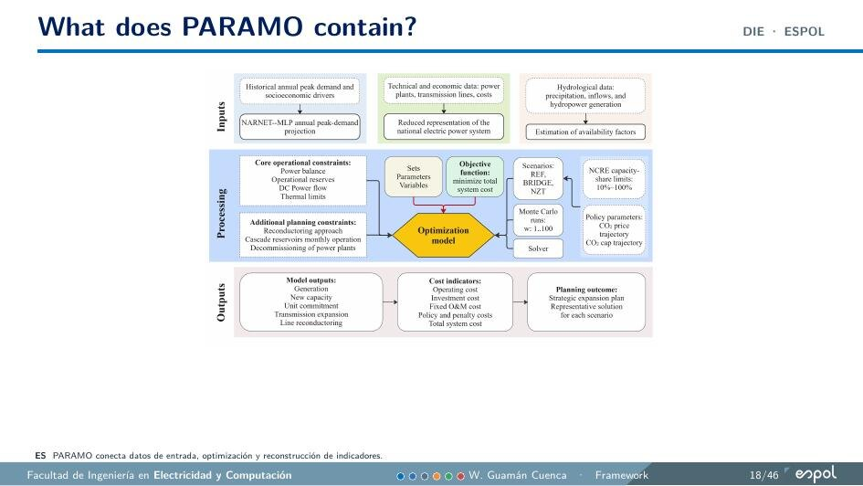

PARAMO
PARAMO es el marco de optimización desarrollado en mi investigación doctoral para la planificación de largo plazo de sistemas eléctricos hidrodependientes. Vincula decisiones anuales de inversión con la operación mensual y representa expansión de generación, refuerzo de transmisión, reconductoring, operación de embalses, reservas, incertidumbre hidrológica, energía no suministrada y trayectorias de política.